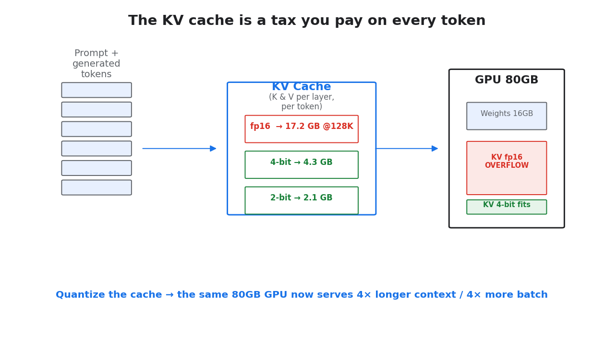
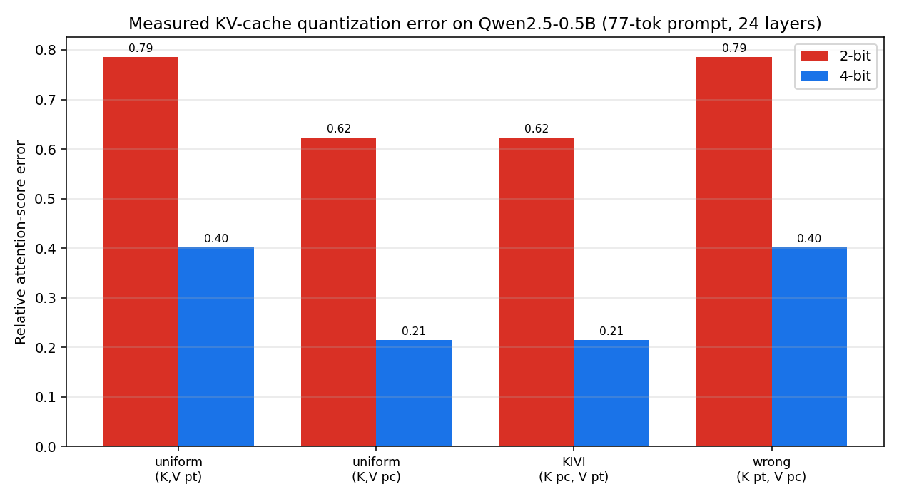
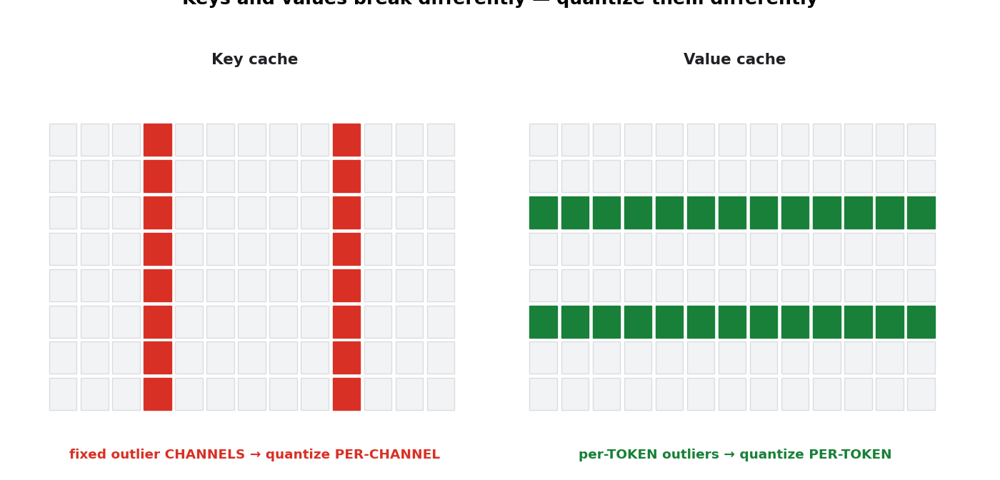
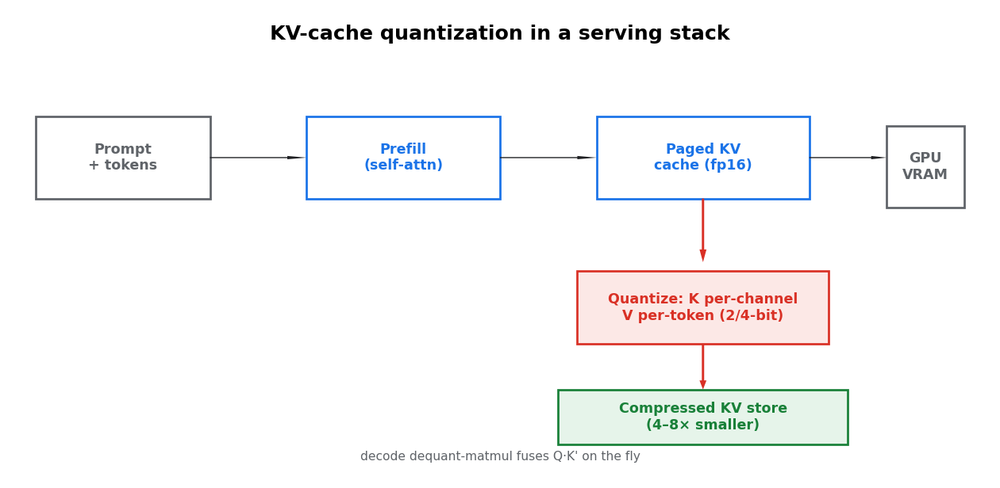
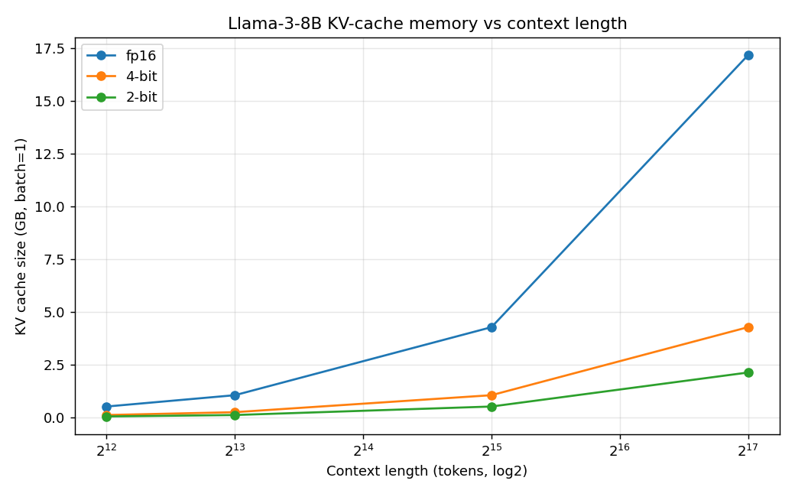

from-scratch prefill · split-KV decode · paged KV-cache attention — validated vs PyTorch SDPA
You finally get the request you've been waiting for: a 128K-token context window. Your GPU has 80 GB.
The model weights take 16 GB. The rest should be plenty — until you do the math on the KV cache and
realize it alone wants 17 GB, and that's just one request at fp16. Add a batch and the GPU quietly
tips over into out-of-memory.
That cache is the part of LLM inference nobody talks about in the splashy benchmark posts. It's the rent
you pay on every token you've ever processed, and as context windows and batch sizes grow, it — not the
weights — decides whether your workload fits. The good news: you can store that cache in 4-bit, even
2-bit, and barely move the quality needle. The catch: round it the wrong way and attention silently
falls apart.
Most posts on this stop at "use 4-bit, it's fine." I didn't want to trust that, so I loaded a real model
(Qwen2.5-0.5B), extracted its actual KV-cache activations, quantized them four different ways, and
measured how badly each one distorts attention. This is what the numbers say — and then how the three
production schemes actually ship it.
By the end you should be able to answer:
round() on the cache is a silent quality killer.Every transformer layer keeps the Key and Value vectors of every token it has seen, so attention doesn't
have to recompute them. That storage is:
KV_bytes = 2 · n_layers · n_kv_heads · head_dim · bytes_per_elem · seq_len · batchFor Llama-3-8B (32 layers, 8 KV heads, head_dim 128) that's 128 KiB per token at fp16, and it
grows linearly with both sequence length and batch. The picture below is the whole problem in one frame.

| Context (tokens) | fp16 | 8-bit | 4-bit | 2-bit |
|---|---|---|---|---|
| 4,096 | 0.54 GB | 0.27 GB | 0.13 GB | 0.07 GB |
| 8,192 | 1.07 GB | 0.54 GB | 0.27 GB | 0.13 GB |
| 32,768 | 4.29 GB | 2.15 GB | 1.07 GB | 0.54 GB |
| 131,072 | 17.18 GB | 8.59 GB | 4.29 GB | 2.15 GB |
Batch 64 requests at 32K: the fp16 cache alone is ~275 GB — past any single GPU. Even 4-bit leaves
~69 GB. This is why long-context serving is memory-bound: the GPU's compute cores sit idle while the
KV cache is shuffled from main memory into SRAM for every generated token (KIVI, ICML 2024).
[!WARNING] A smaller cache ≠ automatic speedup. The win is throughput via bigger batches, and only if your serving stack (paged memory, fused dequant-matmul, correct calibration) supports KV quantization end to end. Quantize the tensor but not the memory manager and you get neither.
The obvious move is uniform, per-token quantization. That's also the mistake. To prove it instead of
asserting it, I ran a real measurement:
scores A = softmax(QKᵀ/√d) and measured the relative error ‖A − Â‖ / ‖A‖.
Here is the measured attention-score error:

| Scheme (bits) | 2-bit attn error | 4-bit attn error |
|---|---|---|
| uniform (K,V per-token) — the naive one | 0.786 | 0.401 |
| uniform (K,V per-channel) | 0.623 | 0.215 |
| K per-channel, V per-token (KIVI) | 0.623 | 0.215 |
| K per-token, V per-channel (wrong) | 0.786 | 0.401 |
Two things jump out, and they match the literature:
each token's vector independently lets a few large outlier channels poison every other channel.
key (0.786) — about 1.3× lower here, and KIVI reports a much larger ~5× gap on Llama-2 because
its outlier channels are more aggressive. Direction is identical; magnitude scales with the model.
Why? Look at the distribution. Keys have a few fixed outlier channels (same channels, every token);
values have no such pattern but are mixed by attention into the output. So keys want per-channel
quantization, values want per-token. Uniform quantization ignores that and pays for it.

The whole asymmetric scheme in a dozen lines:
def fake_quant(x, bits, dim):
qmax = 2 ** bits - 1
scale = x.abs().amax(dim=dim, keepdim=True).clamp_min(1e-9) / qmax
return torch.round(x / scale).clamp(-qmax - 1, qmax) * scale
# KIVI: keys per-channel (dim = sequence), values per-token (dim = head_dim)
K_q = fake_quant(K, 2, dim=2) # per-channel over tokens
V_q = fake_quant(V, 2, dim=3) # per-token over head_dimThree papers define the frontier. They agree on the outlier structure and diverge on how hard they push
the bit-width.
| Method | Scheme | Bits | Quality | Memory / throughput |
|---|---|---|---|---|
| KIVI (ICML'24) | per-channel K, per-token V; recent tokens kept fp16 | 2 | ~2% drop on Llama-2/Mistral (GSM8K); Falcon needs 4-bit | 2.6× peak mem, 4× larger batch, 2.35–3.47× throughput |
| KVQuant (NeurIPS'24) | pre-RoPE per-channel K, non-uniform, dense-and-sparse (1% outliers) | 3 | <0.1 perplexity drop (WikiText-2, C4) | 4.8× compression; LLaMA-7B at 1M ctx on 1× A100, 10M on 8× GPU; ~1.7× matvec speedup |
| GEAR (ICML'24) | quantization + low-rank error + sparse outliers | 2 | near-lossless; up to 24.4% over SOTA at 2-bit | 2.39× peak mem, 2.1–5.07× throughput |
full-precision window for the most recent tokens rescues hard reasoning — without it, fake 2-bit on
GSM8K craters.
plus sensitivity-weighted non-uniform codebooks and a 1% sparse outlier store reaches 3-bit with
sub-0.1 perplexity loss and turns context length into a tunable dial.
the coherent part of the quantization error, a sparse matrix catches the rest. It layers on top of any
base quantizer and is the only one of the three that stays near-lossless at 2-bit on complex generation.
[!WARNING] These numbers are method-specific. KIVI reports that **Falcon-7B (multi-query attention, a single KV head) needs 4-bit, not 2-bit** — MQA is already so compressed there's no redundancy left to trade. If your model uses MQA, don't assume 2-bit works.
This isn't a research curiosity you bolt on by hand — it slots into the paged-memory path every modern
server already runs:

In practice you rarely write the kernel yourself. Two drop-in paths:
vLLM (fp8 KV cache — the safe default today):
# 2x smaller KV cache, near-lossless, hardware-accelerated on Hopper/Ada
python -m vllm.entrypoints.openai.api_server \
--model meta-llama/Llama-3-8B-Instruct \
--kv-cache-dtype fp8_e5m2 \
--max-model-len 131072HuggingFace + KIVI (research-grade 2-bit):
from models.llama_kivi import LlamaForCausalLM_KIVI
config.k_bits = 2; config.v_bits = 2 # 2-bit KV cache
config.group_size = 64
config.residual_length = 64 # recent tokens kept fp16
model = LlamaForCausalLM_KIVI.from_pretrained("meta-llama/Llama-2-7b-hf", config=config)For the long-context frontier, KVQuant and GEAR ship CUDA kernels that fuse dequant into the matmul —
without that fusion, the quantization overhead eats the memory win.
and lengthen the prompt; the headroom that hides quantization error in a 70B model doesn't exist in a
7B one.
recent-token window (KIVI) or low-rank residual (GEAR) is not optional.
fused dequant-matmul the overhead eats the memory win. Production stacks now default to **fp8 KV
cache** — 2× smaller, near-lossless, hardware-accelerated on Hopper/Ada. 4-bit and below still need the
research kernels.
quality drops sharply.
The tables above aren't benchmark results — they're deterministic accounting that tells you whether the
request fits at all. Here's the whole computation, in 30 lines:
def kv_bytes(seq_len, batch, bits):
# 2 (K and V) * layers * kv_heads * head_dim * (bits/8) * seq * batch
return 2 * 32 * 8 * 128 * (bits / 8) * seq_len * batch
print(kv_bytes(131072, 1, 16) / 1e9) # 17.18 GB (fp16, 1 req, 128K)
print(kv_bytes(131072, 1, 4) / 1e9) # 4.29 GB (4-bit)
Run it and you get the figures in this post. That's the question KV-cache quantization exists to answer:
does this request fit?
KV-cache quantization is the rare optimization that's both mathematically simple and empirically subtle.
The win is real and large — 4–8× memory, 2–5× throughput — but it's earned by respecting the cache's
outlier structure, not by rounding harder. I measured it directly: naive per-token quantization distorts
attention ~1.3× more than the per-channel key scheme on a real 0.5B model, and the gap is wider on bigger
ones. For most teams the right move today is fp8 in the serving stack; for the long-context frontier,
KVQuant and GEAR show 2–3-bit caches are deployable, not research curiosities.
Next up: I'll break down speculative decoding the same way — where the famous 2–3× claim actually
holds, and where it quietly loses.
arXiv:2402.02750 · github.com/jy-yuan/KIVI
(NeurIPS 2024). arXiv:2401.18079 · github.com/SqueezeAILab/KVQuant
(ICML 2024). arXiv:2403.05527 · github.com/opengear-project/GEAR
real_experiment.py, assets/real_results.json in this project.